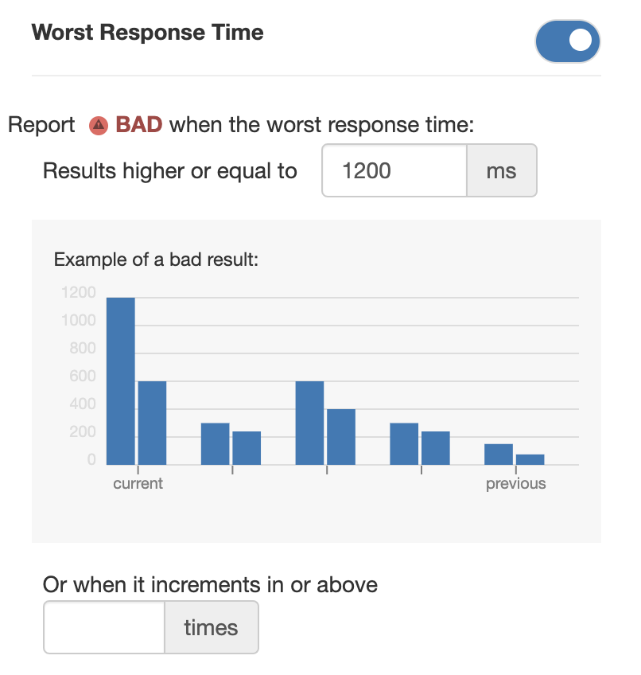
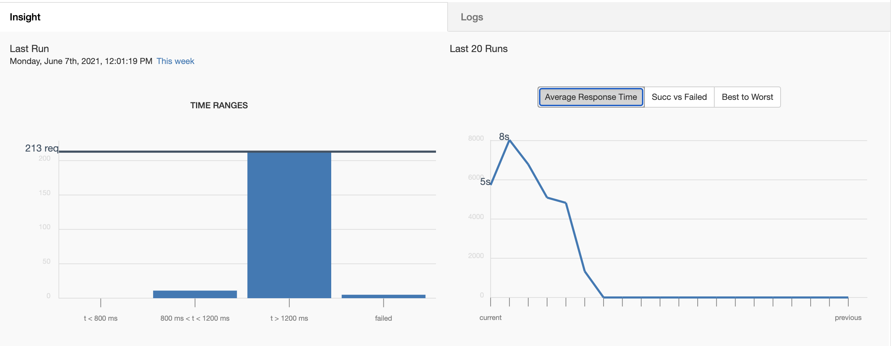
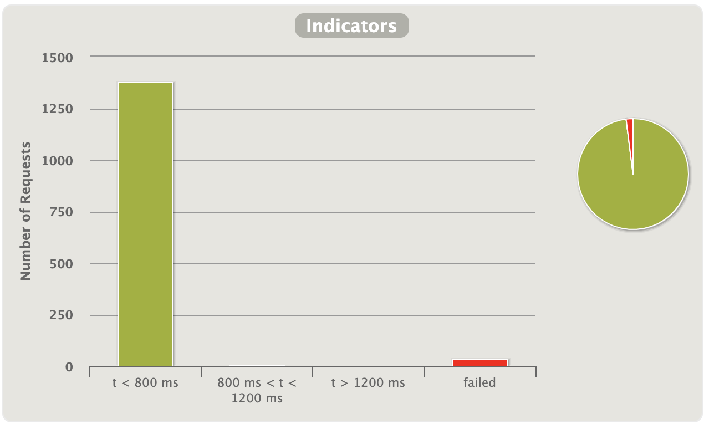
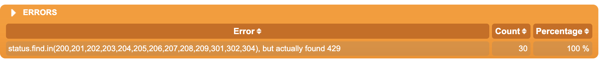
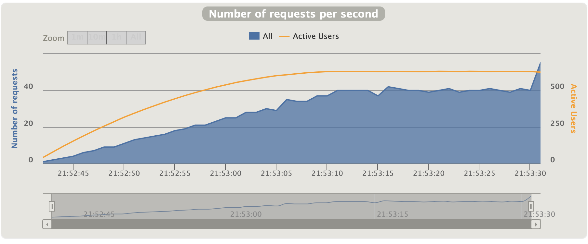

Watson
Watson is a monitor tool to help developers analyze a project’s web performance. With Watson, developers can do the following:
- Group load the test cases by project profiles.
- Design the test cases to validate service availability and throughput.
- Run, stop, and reconfigure the load test scenarios to validate service availability.
- Monitor your website performance through different test cases.
- Obtain detailed reports with graphics about their website performance.
Watson is composed by two main components:
- Watson WebApp: Is the graphical interface of Watson. You can access it through the stag environment page or you can create a WebApp local workspace to work with it in a local instance.
- Watson API: Is the operational core of Watson. You can work with it through the Watson WebApp interface or through your computer terminal by creating an API local workspace.
To help you work with the Watson WebApp and the Watson API, in this page you can find the following sections:
Overview
This documentation guides you through the sections and components of the Watson WebApp. It also contains guides for activities such as how to create a project or create a test case, so that you can start working with the Watson WebApp as smoothly as possible.
The Watson WebApp User Guide contains the following sections:
- Home Page: Presents the information about the Watson Home page.
- Menu: Presents the information about the different Menu options
- Projects: Presents the information about Projects in Watson, from how to create a Project to how to add an integration.
- Test Cases: Presents the information about Test Cases in Watson, from how to create a test case to how to interpret test case reports.
- Jobs: Presents the information about Jobs in Watson, from how to create a job to what are the job details.
Home Page
The Watson WebApp Home page is the main page of Watson. When you access the Watson WebApp through your browser. The Watson WebApp Home page contains two elements as shown in the following image:

The following sections describe in detail each element of the Watson WebApp Home page.
Menu
The Watson Menu, located on the top of the page, displays the different sections of the Watson WebApp. The menu shows the following options:
The following sections describe in detail each element of the Watson Menu.
← Go back to the Home Page section
Home
The Home option of the Watson Menu takes you to the Watson WebApp Home page. You can also click the Watson button to do the same function.
← Go back to the Watson Menu section
Monitor
The Monitor option of the Watson Menu takes you to the Monitor page. The Monitor page shows information about the active and pending simulations happening in the background of the Watson WebApp. The following image shows the Monitor page:

The Monitor page contains the following two tables:
Active Simulations: Located on the left, it shows the information about the active test cases running on the Watson WebApp. It includes the following information:
- Pool Status: The percentage of progress of activities completed up to time.
- Project: The name of the running test case project.
- Test Case: The name of the test case running.
- Time Running: The time passed during the executionThe time elapsed during the test case run process.
Pending Simulations:Located on the right, it presents the information about the pending simulations to run on the Watson WebApp. It includes the following information:
- Queue Status: The progress percentage of activities queued that have been achieved up to timeThe percentage of progress of queued activities that have been completed up to time.
- Project: The name of the test case project to run.
- Test Case: The name of the test case to run.
- Time Running: The expected time to run the test case.
User Guide
The User Guide option of the Watson Menu takes you to the Watson WebApp User Guide. The User Guide shows you information about how to work with the Watson WebApp. Additionally, it shows you how to configure the virtual workspace for the Watson WebApp and Watson API, as well as the API Reference documentation.
← Go back to the Watson Menu section
Version
Located in the top-right corner of the page, the Version option of the Watson Menu takes you to the Instance Details page. The Instance Details page is divided into two sections that show information about the instance:
- Run Engine: Shows the type of engine in which the instance is running. The engine changes depending on whether it is a local instance or one in the cloud:
| Instance | Engine |
|---|---|
| Cloud | Amazon Web Services (AWS) Spot Instance |
| Local | Localhost Image |
- Fleet Resources: Shows the information about the Fleet Request for AWS. Each fleet request contains an N number of Spot instances where Watson runs the test cases. The information presented of each Fleet Request is the following:
| Section | Value | Description |
|---|---|---|
| VPC (Virtual Private Cloud) | Name | The name of the VPC |
| bu | The Good Corp. (DJ) Business Unit of the VPC | |
| environment | The type of environment in which the VPC is | |
| owner | The email of the VPC owner | |
| product | The type of product of the VPC | |
| component | The DJ Component to which the VPC belongs | |
| servicename | The name of the service provided | |
| AZ (Amazon Zone) | location | The geographical location of the AWS VPC |
| SUBNET | Name | The name of the VPC |
| bu | The DJ Business Unit of the VPC | |
| environment | The type of environment in which the VPC is deployed | |
| owner | The email of the VPC owner | |
| product | The type of product of the VPC | |
| component | The DJ Component to which the VPC belongs | |
| servicename | The name of the service provided |
← Go back to the Watson Menu section
Projects
In Watson, Projects function as profiles for test cases. You can create Projects to group test cases aimed at a specific web page or web app and organize your test cases by Project profile.
Your Projects are displayed on the Watson Home page, organized in a table by date of creation. To access a Project, click its name, and the Watson WebApp will direct you to the Home page of the Project you selected.
This section contains the following topics:
← Go back to the Home Page section
Create a Project
To create a new Project profile, follow these steps:
- Open the Watson WebApp Home page.
- Click the + Create button on the upper right corner of the page. The New Project page appears.
- Enter the name of the new Project in the Name field.
- Enter the name of the Project team in the Team field.
- Enter the name of the Project business unit in the Business Unit field.
- Enter the url to the Project repository in the Repository field.
- Click the Ok button. Your new Project appears in the Home page.
To start working with your project, see the Project Home page section.
← Go back to the Projects section
Project Home Page
Project profiles have a Home page that showcases the test cases and jobs created for that specific Project. After creating a new Project, the Project Home page is shown as an empty canvas waiting for test cases or jobs to be created. See the section Test Cases and Jobs to learn how to create a Test Case or a Job.
To learn how to configure your Project, see the Project Settings section.
← Go back to the Projects section
Project Settings
The Project Home page also shows the Project Settings option, located on the top right corner of the page. You can identify it by the gear icon.

The Project Settings page shows you the available settings to configure the Project profile that you are in. It displays the settings ordered in three tabs:
About this Project: Shows the details about the project. The available details for a Project profile are:
- Name: The name of the Project profile.
- Team: The name of the team creating the Project profile.
- Business Unit: The name of the Team Business Unit.
- Repository: The URL to the Project code repository in GitHub.
Integrations: Adds integrations with other applications (for example, Slack).
Other Settings: Shows other configuration settings for the Project.
In the following sections, you can learn more about the different settings available for the Watson Projects profiles.
← Go back to the Projects section
Change a Project Detail
To change the Project profile details, follow these steps:
- Select a Project from the Watson WebApp Home page. The selected Project Home page appears.
- Click on the Project Settings button on the top right corner of the page. The Project Settings page appears.
- Select the About this Project tab. The Project Details page appears.
- Enter the new name for the Project in the Name field.
- Enter the new name of the Project Team in the Team field.
- Enter the new name of the Business Unit of the Project Team in the Business Unit field.
- Enter the new URL to the Project code repository in the Repository field.
- Click the Ok button. The Project Details page saves and displays the new details
← Go back to the Project Settings section
Delete a Project
To delete a Project profile, follow these steps:
- Select a Project from the Watson WebApp Home page. The selected Project Home page appears.
- Click on the Project Settings button on the top right corner of the page. The Project Settings page appears.
- Select the Other Settings tab. A checklist with options appears.
- Select the Delete this Project option.
- Click the Ok button. The Project is deleted and the Watson WebApp Home page appears..
← Go back to the Project Settings section
Restart a Project
When you restart a Project, Watson deletes all the Test Cases loaded to the Project without changing the settings of the Project.
To restart a Project, follow these steps:
- Select a Project from the Watson WebApp Home page. The selected Project Home page appears.
- Click on the Project Settings button on the top right corner of the page. The Project Settings page appears.
- Select the Other Settings tab. A checklist with options appears.
- Select the Start Over option.
- Click the Ok button. The Project Home page appears without any test cases loaded.
← Go back to the Project Settings section
Add Integrations to a Project
Currently, Watson integrates with Slack to deliver channel notifications and alerts about the status of a test case run of a specific Project.
To integrate Slack Notifications to a Project, you need to follow these two procedures, which are described in detail in the following sections:
← Go back to the Project Settings section
1. Create a Slack Channel WebHook
To create a Slack Channel WebHook to integrate received notifications in your Slack channel, follow these steps:
- Access the Good Corp. Slack Channel Incoming WebHooks page in your browser. The Incoming WebHooks page appears.
- In the Post to Channel section, select your channel from the dropdown menu.
- Click the Add Incoming WebHooks integration button. A page with the WebHook integration information appears.
- Save the WebHook URL for the following steps.
To integrate Watson to your slack channel, see the Integrate Slack Notifications to a Project Profile section.
2. Integrate Slack Notifications to a Project Profile
To integrate Slack notifications to a Project profile, follow these steps:
- Select a Project from the Watson WebApp Home page. The selected Project Home page appears.
- Click on the Project Settings button on the top right corner of the page. The Project Settings page appears.
- Select the tab Integrations. A form to configure the integration appears.
- Type the name of your Projects Slack Channel in the Channel Name field.
- Type the WebHook URL in the WebHook Url field. See how to get the URL in the Create A Slack Channel WebHook steps.
- Select the type of notification in the Notification Trigger section. You can choose from the following options:
- OK: Notifies that a test case ran successfully.
- Warning: Notifies that a test case ran with errors.
- Bad: Notifies that a test case ran with unsuccessful results.
- None: Does not notify when a test case runs.
- Select the type of alert in the Alert Trigger section. You can choose from the following options:
- OK: Notifies that a test case ran successfully.
- Warning: Notifies that a test case ran with errors.
- Bad: Notifies that a test case ran with unsuccessful results.
- None: Does not notify when a test case runs.
- Click the Ok button. Watson is integrated to your Slack channel.
Once you created and configured your Project profile, it is time to create and configure the test cases for your Project website or web application. The Test Cases section walks you through the process of creating, configuring, and running Test Cases.
← Go back to the Project Settings section
Test Cases
Watson Projects contain Test Cases. You can create Test Cases to examine the availability and throughput of a website or web application which enables you to look for for features to improve points or bugs to fix.
This section contains you the following information about Test Cases:
Test Case Presets
When you start to create a Test Case, Watson prompts you to choose a Preset. A Preset is a type of prefabricated Test Case configuration, which you can modify to fit your Projects testing needs.
The following table lists the Test Case Presets available in Watson:
| Preset | Description |
|---|---|
| Get a Single Url | Tests the response time to get a single URL for a fixed RPS number. |
| Get a Single Url Changing a Header Value | Tests the response time to get a single URL for a fixed RPS number changing a header value. |
| Get a Single Url Changing a Path Parameter | Tests the response time to get a single URL for a fixed RPS number changing a path parameter. |
| Get a Single Url Changing a Query Value | Tests the response time to get a single URL for a fixed RPS number changing a query value. |
| Get a Single Url from Different Hosts | Tests the response time to get a single URL for a fixed RPS number from different hosts. |
| Post to a Single Url | Tests the response time to post to a single URL for a fixed RPS number. |
| Post to a Single Url Changing a Query Value | Tests the response time to post to a single URL for a fixed RPS number changing a query value. |
| Copy the Configuration from a Different Test Case | Creates a Test Case copying the configuration of the Test Case name given. |
To learn how to create a Test Case, see the Create a Test Case section.
← Go back to the Test Cases section
Create a Test Case
To create a new Test Case for a project profile, follow these steps:
- Select a project from the Watson WebApp home page. The selected project home page appears.
- Select the Test Cases tab.
- Click the + Create button in the top left corner of the Test Cases tab. The New Test Case page appears.
- Enter the name of your new Test Case in the Name field.
- Select a Preset type for your new Test Case.
- Click the Ok button. A new empty Test Case Home page appears.
To learn more about how to run and configure Test Cases, see the Test Case Home Page section.
← Go back to the Test Cases section
Test Case Home Page
Test Cases have a Home page where you can view the information obtained from the previous Test Case runs, or configure your Test Case to fit your testing needs. The Test Case Home page shows the following sections:
After creating a new Test Case, the Test Case information sections are empty and the Test Case is set up with default configuration, which you need to edit to be able to test your Project.
To learn how to configure your Test Case, see the Test Case Settings section.
← Go back to the Test Cases section
Test Case Settings
Test Cases are configured with default settings when created. To test your web page or web application, you must adapt this configuration to your Test Case setting.
To access a Test Case Settings, follow these steps:
- Select a Test Case from the selected Project home page.
- Click the name of the selected Test Case. The selected Test Case home page appears.
- Click the Testcase Settings button on the top right corner of the Test Case Home page. The Test Case settings page appears.
The Test Case Settings page contains the following tabs, each one containing parameters and settings that can be adapted to your Project Test Case settings. The following sections show information about the configuration settings on the following tabs:
← Go back to the Test Cases Home Page section
Run Parameters
The Run Parameters configuration settings define the way a Test Case runs. The Run Parameters are JSON files that store the information that defines a Test Case, like the target URL or the number of requests per second (RPS).
The Run Parameters settings tab can present the following sections, depending of the Preset of the Test Case:
To know about the specific parameters for each Test Case Preset, see the Preset section.
← Go back to the Test Cases Settings section
Preset
A Preset is the type of configuration that you selected when creating your Test Case. The Preset contains the prefabricated configuration of a Test Case to be modified to fit your testing needs.
Depending on the type of Preset you select, some parameters may vary. The following table lists the Presets and their available configurations:
| Preset | Available Configurations |
|---|---|
| Get a Single Url | Config |
| Url | |
| Headers | |
| Expected Status | |
| Get a Single Url Changing a Header Value | Config |
| Url | |
| Dynamic Header Key | |
| Dynamic Header Values | |
| Default Headers | |
| Expected Status | |
| Get a Single Url Changing a Path Parameter | Config |
| Url | |
| Dynamic Values | |
| Headers | |
| Expected Status | |
| Get a Single Url Changing a Query Value | Config |
| Url | |
| Dynamic Values | |
| Headers | |
| Expected Status | |
| Get a Single Url from Different Hosts | Config |
| Dynamic Hosts | |
| Path | |
| Headers | |
| Expected Status | |
| Post to a Single Url | Config |
| Url | |
| Dynamic Body | |
| Headers | |
| Expected Status | |
| Post to a Single Url Changing a Query Value | Config |
| Url | |
| Dynamic Values | |
| Body | |
| Headers | |
| Expected Status |
To change the Preset type of your Test Case, follow these steps:
- Click the Preset section of the Run Parameters tab. A dropdown menu with the Preset options appears.
- Select the new Preset configuration for your Test Case.
- Click the Ok Button. Watson loads the default settings of the new Preset.
To learn more about the Run Agent configuration of your Test Case, see the Run Agent section.
Run Agent
The Run Agent section of the Run Parameters shows the configuration for the Test Case Run Agent. The Run Agent configuration appears when working with any environment other than localhost.
The following table lists the available parameters of the Run Agent section:
| Parameter | Description | Type | Notes |
|---|---|---|---|
| Peers | The number of AWS Spot Instances in which the Test Case runs. | Integer | Each Peer runs as a separate node with its own workload, but results are grouped. |
| Warmup Url | The URL to test connectivity to the Test Case target host. | String | The Warmup Url and the Target URL of the Test Case must belong to the same host. In case the Warmup Url is not reachable, the Test Case doesn’t run. |
| Spot Size | The size and characteristics configuration of the Spot Instance. | String | For further information on the Spot Instances sizes configuration, see the Amazon EC2 Instance Types page by Amazon. |
To edit the Run Agent parameters, follow these steps:
- Select the Run Agent tab in the Run Parameters page. A page with the Run Agent parameters fields appears.
- Enter the number of peers in the Peers field.
- Enter the Warm up URL to test connectivity to the host in the Warmup Url field.
- Select the type of Spot Instance from the Spot Size dropdown list.
- Click the Ok button to save your changes. Your Run Agent parameters are set up.
To learn more about the Run Parameters configuration of your Test Case, see the Config section.
← Go back to the Run Parameters section
Config
The Config section of the Run Parameters shows the JSON file that contains the environment parameters for the Test Case to be replicated. Each Test Case requires a set of parameters that vary depending on the Test Case Preset. The following table lists the available parameters of the Config JSON file:
| Parameters | Description | Type | Notes |
|---|---|---|---|
| rps (Request Per Second) | The number of request the Test Case does to target URL | Integer | Valid Values: 1 to 360,000 |
| rampup | The speed at which new concurrent requests try to access the target URL | Integer | Valid Values: 0 to 7,200 |
| duration | The time in seconds to complete the Test Case run | Integer | Valid Values: 5 to 7,200 |
| strategy | The form in which the data samples are selected | String | Valid Values: Circular Random |
| In Circular strategy, each peer start in index 0 | |||
| followRedirects | The boolean that defines if the target URL will load the following redirect resource | Boolean | Default value: false |
The following script is an example of a Config parameters JSON file:
[
{
"rps": 10,
"rampup": 30,
"duration": 50,
"followRedirects": false,
"strategy": "random"
}
]
To edit the Config parameters, follow these steps:
- Select the Config tab in the Run Parameters page.
- Select the Form Edit option tab. A page with the Config field appears.
- Enter the RPS for your Test Case in the Rps field.
- Enter the seconds to reach the target RPS for your Test Case in the Rampup field.
- Enter the seconds to complete your Test Case in the Duration field.
- If applicable, select the data selection Strategy for your test case with the Circular or Random button.
- If applicable, define if your Test Case loads the following redirect source with the Follow Redirects switch.
- Click the Ok button to save your changes. Your Config settings are set up.
To know how to set up a Test Case URL, see the URL section.
← Go back to the Run Parameters section
URL
The URL section of the Run Parameters shows the JSON file with the Target URL for the Test Case. The target URL defines the web address of the project being tested. The following table lists the available parameters of the URL JSON file:
| Parameter | Description | Type | Notes |
|---|---|---|---|
| url | The Target URL for the Test Case | String | To learn how to add Path or Query Parameters, see the Dynamic Run Parameters section. |
The following script is an example of a Target URL JSON file:
[
{
"url":"https://petstore.octoperf.com/actions/Catalog.action"
}
]
For more information on Target URLs using Path or Query values, see the Dynamic Run Parameters section.
To edit the Target URL, follow these steps:
- Select the URL tab in the Run Parameters page.
- Select the Form Edit option tab. A page with the Url field appears.
- Enter the URL for your Test Case in the Url field.
- Click the Ok button to save your changes. Your Config settings are set up.
To know how to set up the headers of a Target URL, see the Headers section.
← Go back to the Run Parameters section
Headers
The Headers section of the Run Parameters shows the JSON file with the HTTP Headers needed to run the Test Case. Headers let Watson and the web server pass additional information with an HTTP Request or Response. The following table lists the parameters of the Headers JSON file:
| Parameter | Description | Type | Notes |
|---|---|---|---|
| key | The name of the default HTTP Header of the Target URL. | String | For further information on Headers, see the HTTP Header list by MDN Web Docs. |
| value | The value that the default HTTP Header receives in the Target URL server. | String |
The following script is an example of a Headers JSON file:
[
{
"key": "Accept",
"value": "*/*"
},
{
"key": "Accept-Language",
"value": "en-US,en;q=0.5"
}
]
To edit the Headers list, follow these steps:
- Select the Headers tab in the Run Parameters page.
- Select the Form Edit option tab. A page with the Key and Value fields appears.
- Edit the name of your Default Header in the Key field.
- Edit the Value of your Default Header in the Value field: a. Click the + plus button to add a new Default Header. b. Repeat steps 3 and 4. c. Repeat step 4.a if necessary.
- Click the Ok button to save your changes. Your Headers are set up.
To know how to set up a Test Case Expected Status, see the Expected Status section.
← Go back to the Run Parameters section
Expected Status
The Expected Status section of the Run Parameters shows the JSON file with the expected Status Code Responses after each request run. The following table lists the available parameters of the Expected Status JSON file:
| Parameter | Description | Type | Notes |
|---|---|---|---|
| status | The number of the HTTP Status Code expected after the Test Case run. | String | For further information on Status Codes see the HTTP Status Code list by MDN Web Docs. |
The following script is an example of an Expected Statuses JSON file:
[
{
"status": 200
},
{
"status": 201
},
{
"status": 202
}
]
For further information on the meaning of the status codes, see the HTTP Response Status Codes page by the MDN Web Docs.
To edit the Expected Status JSON file, follow these steps:
- Select the Expected Status tab in the Run Parameters page.
- Select the Form Edit option tab. A page with the Status field appears.
- Modify the value of your Status codes: a. Click the + plus button to add a new Expected Status. b. Repeat the previous step if necessary.
- Click the Ok button to save your changes. Your Expected Status codes are now set up.
To know how to set up Dynamic Run Parameters in Test Cases that change a parameter, see the Dynamic Run Parameters section.
← Go back to the Run Parameters section
Dynamic Run Parameters
Test Cases created with the following Presets have Dynamic Run Parameters to configure:
- Get a Single Url Changing a Path Parameter
- Get a Single Url Changing a Query Value
- Post to a Single Url Changing a Header Value
- Get a Single Url from Different Hosts
- Post to a Single Url
The Dynamic Run Parameters section shows the JSON files with the Path, Query, Header, Host, or Body parameters to change to the target URL when running a Test Case. To use Dynamic Values, you must configure the following depending of your Test Case Preset:
← Go back to the Run Parameters section
Path and Query Parameters
The Path and Query parameters enable Watson to change a part of the Target URL to access sections of the Web page or Web App to test with a Test Case. Path and Query parameters are defined in the URL, but they have different structure and objective:
- Path parameters: Enable developers to identify a specific item from a resource.
# Get the user with the id 123
https://mypage.com/users/123
- Query parameters: Enable developers to filter or sort items from a resource.
# Get all users with the occupation "technical writer"
www.mypage.com/users?occupation=technical-writer
To learn how to change Path and Query parameters to the Target URL, see the Dynamic Target URL section.
← Go back to the Dynamic Run Parameters section
Dynamic Target URL
Watson uses String Interpolation to change the Path or Query parameters in the Dynamic Target URL with the values defined in the Dynamic Values JSON File. To achieve this, Watson defines the path and query parameters on the Target URL by using the following structure:
This is an example of a Path parameter:
/${path-parameter}/
This is an example of a Query parameter:
?query-parameter=${query-value}
This is an example of the Target URL with a Path parameter:
https://en.wikipedia.org/wiki/The_Wall_Street_Journal
This is an example of the Target URL with a Query parameter:
https://en.wikipedia.org/wiki/Special:RecentChanges?hidebots=1
To set a Dynamic Target URL, follow these steps:
- Select the Url tab in the Run Parameters page.
- Select the Form Edit or Raw Edit option tab.
- Edit your Target URL like the following example including your Path or Query parameters:
https://mypage.com/${path-parameter}?query-parameter=${query-value} - Click the Ok button. Your Dynamic Target URL is set up.
To define the Dynamic Values JSON file, see the Dynamic Values section.
← Go back to the Dynamic Run Parameters section
Dynamic Values
Once you set up your Dynamic Target URL, you must define the values of the Path and Query parameters of your Dynamic Target URL so the Test Case can run the testing correctly.
The following script is an example of a Dynamic Values JSON file for the example Target URL:
Example Target URL:
https://professional.dowjones.com/${page}
Dynamic values JSON file:
{
"key": "page",
"value": "risk"
},
{
"key": "page",
"value": "factiva"
},
{
"key": "page",
"value": "newswires"
}
]
The example above contains a Target URL with one Path parameter, and the Dynamic Values JSON file with the three values for the path parameter of the Target URL.
To set up the Dynamic Values for a Test Case, follow these steps:
- Select the Dynamic Values tab in the Run Parameters page
- Select the Form Edit option tab A page with the Value field appears
- Edit the value of your Path Parameter in the Value field a. Click the + plus button to add a new Dynamic Value b. Repeat the previous step if necessary
- Click the Ok button to save your changes Your Dynamic Values are set up
To know how to set up your Test Cases to use Dynamic Headers, see the Header Parameters section.
← Go back to the Dynamic Run Parameters section
Header Parameters
Test Cases created with the Get a Single Url Changing a Header Value Preset test the functionality of a web page by changing a header value. Therefore, the headers of the web page become dynamic because of this value change. The Dynamic Headers settings available for the Get a Single Url Changing a Header Value are the following:
← Go back to the Dynamic Run Parameters section
Dynamic Key Header
The Dynamic Key Header section shows the key header that receives the Dynamic Header Values during the Test Case run. Test Cases are limited to one Dynamic Key Header. The following table lists the parameters of the Dynamic Key Header JSON file:
| Parameter | Description | Type | Notes |
|---|---|---|---|
| key | The name of the Dynamic key HTTP Header of the Target URL. | String | For further information on Headers, see the HTTP Header list by MDN Web Docs. |
The following script is an example of a Dynamic Key Header JSON file:
[
{
"key": "Accept"
}
]
For further information on the meaning of the Key Headers, see the HTTP Headers list page by the MDN Web Docs.
To change the Dynamic Key Header, follow these steps:
- Select the Dynamic Key Header tab in the Run Parameters page.
- Select the Form Edit option tab. A page with the Key field appears.
- Edit the value of your Key Header in the Key field.
- Click the Ok button to save your changes. Your Dynamic Key Header is set up.
To learn how to set up the dynamic values of your Dynamic Key Header, see the Dynamic Header Values section.
← Go back to the Dynamic Run Parameters section
Dynamic Header Values
The Dynamic Header Values section shows the JSON file with the values to set up for the Dynamic Key Header. The following table lists the parameters of the Dynamic Header Values JSON file:
| Parameter | Description | Type | Notes |
|---|---|---|---|
| value | The value that the Dynamic Key HTTP Header receives in the Target URL server. | String | For further information on Headers, see the HTTP Header list by MDN Web Docs. |
The following script is an example of a Dynamic Header Values JSON file:
[
{
"value": "application/json"
},
{
"value": "image/jpeg"
}
]
For further information about the accepted values for your required Key Header, see the HTTP Headers list page by the MDN Web Docs.
To change the Dynamic Header Values, follow these steps:
- Select the Dynamic Header Values tab in the Run Parameters page.
- Select the Form Edit option tab. A page with the Value field appears.
- Edit the value of your Dynamic Header Value in the Value field.
- Click the Ok button to save your changes. Your Dynamic Header Values are set up.
To learn how to set up the default headers for your Test Case, see the Default Headers section.
← Go back to the Dynamic Run Parameters section
Default Headers
The Default Headers section shows the JSON file with the HTTP Headers needed to run the Test Case. Headers let the Watson and the web server pass additional information with an HTTP Request or Response. The following table lists the parameters of the Default Headers JSON file:
| Parameter | Description | Type | Notes |
|---|---|---|---|
| key | The name of the default HTTP Header of the Target URL. | String | For further information on Headers, see the HTTP Heade list by MDN Web Docs. |
| value | The value that the default HTTP Header receives in the Target URL server. | String |
The following script is an example of a Default Headers JSON file:
[
{
"key": "Accept",
"value": "*/*"
},
{
"key": "Accept-Language",
"value": "en-US,en;q=0.5"
}
]
To change the Default Headers, follow these steps:
- Select the Default Headers tab in the Run Parameters page.
- Select the Form Edit option tab. A page with the Key and Value fields appears.
- Edit the name of your Default Header in the Key field.
- Edit the Value of your Default Header in the Value field.
- If neccesary, Click the + plus button to add a new Default Header. a. Repeat steps 3 and 4 . b. Repeat step 4.a if necessary.
- Click the Ok button to save your changes. Your Default Headers are set up.
To set up dynamic host parameters for your Test Case, see the Host Parameters section.
← Go back to the Dynamic Run Parameters section
Host Parameters
Test Cases created with the Get a Single Url From Different Hosts test the accessibility and speed of a web page to be loaded from different hosts. This means that the Test Cases test a Target URL located at different servers around the world. The Dynamic Host settings available for the Get a Single Url From Different Hosts are the following:
← Go back to the Dynamic Run Parameters section
Dynamic Hosts
The Dynamic Hosts section of the Run Parameters shows the JSON file with the list of hosts from where the Test Case tries to test the Target URL accessibility and load speed. The following table lists the available parameters for the Dynamic Host JSON file:
| Parameter | Description | Type |
|---|---|---|
| name | The name of the host to test Target URL. | String |
| host | The Target URL for the host to test | String |
The following script is an example of a Dynamic Hosts JSON file:
[
{
"name": "Wikipedia English",
"host": "https://en.wikipedia.org"
},
{
"name": "Wikipedia Spanish",
"host": "https://es.wikipedia.org"
},
{
"name": "Wikipedia Italian",
"host": "https://it.wikipedia.org"
}
]
To edit the Dynamic Host list, follow these steps:
- Select the Dynamic Host tab in the Run Parameters page.
- Select the Form Edit option tab. A page with the Name and Host fields appears.
- Edit the name of your Dynamic Host in the Name field.
- Edit the Dynamic Host URL in the Host field. a. Click the + plus button to add a new Dynamic Host. b. Repeat steps 3 and 4 . c. Repeat step 4.a if necessary.
- Click the Ok button to save your changes. Your Dynamic Hosts are set up.
To learn how to set up the path for the Dynamic Host of a Test Case, see the Path section.
← Go back to the Dynamic Run Parameters section
Path
The Path section of the Run Parameters shows the JSON file with the target section of the Target URL the Test Case tests in every Dynamic Host. The following table lists the available parameters for the Path JSON file:
| Parameter | Description | Type |
|---|---|---|
| path | The query and path parameters that complement the Target URL to test in the Dynamic Hosts. | String |
The following Script shows an example of a Path JSON file:
[
{
"path": "/wiki/Special:Random"
}
]
To change the Path, follow these steps:
- Select the Path tab in the Run Parameters page.
- Select the Form Edit option tab. A page with the Path field appears.
- Enter the Path values for your Dynamic Hosts in the Path field.
- Click the Ok button to save your changes. Your Path is set up.
To set up dynamic host parameters for your Test Case, see the Body Parameter section.
← Go back to the Dynamic Run Parameters section
Body Parameter
Test Cases created with the following Presets have a Body Parameter:
- Post to a Single URL
- Post to a Single URL Changing a Query Parameter
The Body Parameter helps the Test Cases with the preceding Presets to Post values to a Target URL. Since each URL has different parameters, JSON files in this section may vary from Project to Project.
To edit the Test Case Body parameter, follow these steps:
- Select the Body tab in the Run Parameters page.
- Click the Edit Form tab.
- Click the Open the File Explorer button. A File explorer window appears.
- Select the JSON file with the body of your POST.
- Click the Open button. The name of the file appears in the Submit your file section.
- Click the Ok button. The JSON file with your POST body is updated.
After you finish configuring the Run Parameters settings, you can further configure your Test Case to help you define:
See the sections listed above for further information.
← Go back to the Dynamic Run Parameters section
Health Checks
Health Checks are analytical algorithms that diagnose the run results and trends of a Test Case. It helps to understand the results of a Test Case run by presenting graphical representations of the results with graphs and icons. Three types of health checks exist, each one representing an aspect of the run results:
See the sections listed above for further information.
← Go back to the Test Case Settings section
Average Response Time
The Average Response Time health check shows the time each request took to be completed. The health check represents the results through a linear graph and it shows a BAD red sign if the Average Response Time is higher or equal to the specified time.
The Average Response Time graph and sign appear like the following image:

To change the expected Average Response Time for a Test Case run, follow these steps:
- Select the Health Checks tab of the Testcase Settings page. The Health Checks page appears.
- Select how to measure the Average Response Time: a. Change the Average Response Time expected microseconds (MS) result field, or b. Change the times each response time increments with respect to the Average Response Time obtained in the previous Test Case run.
- Click the Ok button in the bottom right corner of the page. Your Average Response Time health check is updated.
← Go back to the Test Case Settings section
Succeeded vs Failed
The Succeeded vs Failed health check shows the percentage of requests that failed or succeeded to obtain a response. The health check represents the results through a bar graph and shows a BAD red sign if the percentage of requests that failed to obtain a result is higher or equal to the specified percentage.
The Succeeded vs Failed graph and sign appear like the following image:

To change the expected Succeeded vs Failed percentage for a Test Case run, follow these steps:
- Select the Health Checks tab of the Testcase Settings page. The Health Checks page appears.
- Select how to measure the Succeeded vs Failed percentage. a. Change the Succeeded vs Failed expected percentage (%) result field, or b. Change the Succeeded vs Failed percentage increment of the run compared to the Succeeded vs Failed percentage obtained in the previous Test Case run.
- Click the Ok button in the bottom right corner of the page. Your Succeeded vs Failed health check is updated.
← Go back to the Test Case Settings section
Worst Response Time
The Worst Response Time health check shows the best and worst time taken for a request to obtain a response. The health check represents the results through a bar graph and shows a BAD red sign if the worst time to obtain a result is higher or equal to the specified time.
The Worst Time Response graph and sign appear like the following image:

To change the expected Worst Response Time for a Test Case run, follow these steps:
- Select the Health Checks tab of the Testcase Settings page. The Health Checks page appears.
- Select how to measure the Worst Response Time. a. Change the Worst Response Time expected microseconds (MS) result field, or b. Change the times each response time increments with respect to the Average Response Time obtained in the previous Test Case run.
- Click the Ok button in the bottom right corner of the page. Your Worst Response Time health check is updated.
← Go back to the Test Case Settings section
Charts and indicators
The Charts and Indicators section shows the parameters that define the times in which a Test Case considers a request response is fast, slow, or fails to complete. The following list contains the Chart and Indicators parameters for the Test Cases:
- Response Time Lower Bound: The lowest expected time in which a request gets a response.
- Response Time Higher Bound: The highest expected time in which a request gets a response.
- Response Timeout: The time in which a request is close because it did not get a response.
To know how to interpret the charts created with these parameters, see the Test Case Insights and the Test Case Reports sections.
← Go back to the Test Case Settings section
Rename a Test Case
To rename a Test Case, follow these steps:
- Click on the Testcase Settings button on the top right corner of the page. The Testcase Settings page appears.
- Select the Rename Testcase tab. A Name field appears.
- Enter the new name for the Test Case in the Name field.
- Click the Ok button. The Testcase Home page displays the new name on the top left corner of the Testcase Home page.
← Go back to the Test Case Settings section
Delete a Test Case
To delete a Test Case, follow these steps:
- Click on the Testcase Settings button on the top right corner of the page. The Testcase Settings page appears.
- Select the Other Settings tab. The Delete this testcase radio button appears.
- Enable the Delete this testcase radio button
- Click the Ok button. The Testcase is deleted and the Project Home page appears with the remaining Test Cases.
← Go back to the Test Case Settings section
Run a Test Case
Once you set up your Test Case with the configuration of your Web page or Web App, you are able to run your Test Case. To run a Test Case, click the Run button below the name of the Test Case.

To stop a Test Case, click the Stop button below the name of the Test Case.

After you run a Test Case for the first time, the Test Case Home page presents you the following sections with information about the last 20 runs of the Test Case:
To learn how to interpret the information of each section, see the sections above.
← Go back to the Test Case Home Page section
Test Case Logs
When you run a Test Case, the Logs section of your Test Case Home page shows you the activities in progress in real-time. You can check the Logs after the run is finished.
See the sections of a Log in the following list to understand how to read Logs:
← Go back to the Test Case Home Page section
Initializing
When you run a Test Case, Watson starts the following three activities:
- Execute Run Command: Watson starts the Run command. The Run command launches a series of background activities to create the Simulation Work of the Test Case.
- Create the Simulation Work: Watson creates the Simulation Work for the Test Case. Watson takes the Project and Test Case parameters to create the Simulation Work.
- Running the Simulation Work: Watson runs the Simulation Work created in the preceding step. Once the Simulation Work is running without problems, the Test Case iterations start running.
The following script is an example of how the Initializing section appears in the Logs:
[RUN AGENT] Joining the pending queue... # 1 second after launch
[RUN AGENT] Executing run command... # 2 seconds after launch
[RUN AGENT] Run command successfully executed
Tue Jun 01 17:37:43 UTC 2021 [SIMULATION WORKER] Creating simulation work...
Tue Jun 01 17:37:45 UTC 2021 [SIMULATION WORKER]
project = dow-jones
testcase = path-parameter
preset = GetASingleUrlChangingAPathParameter
total peers = 1
peer number = 0
Tue Jun 01 17:37:45 UTC 2021 [SIMULATION WORKER] Loading configuration...
Tue Jun 01 17:37:47 UTC 2021 [SIMULATION WORKER] Running simulation...
Tue Jun 01 17:37:48 UTC 2021 [SIMULATION WORKER] [SIMULATION WORKER] Still alive
Simulation GetASingleUrlChangingAPathParameter started...
Tue Jun 01 17:37:53 UTC 2021 [SIMULATION WORKER] [SIMULATION WORKER] Still alive
To understand how Logs report the running simulation, see the Running section.
← Go back to the Test Case Logs section
Running
Once Watson created the Simulation Work with the Project and Test Case parameters, the Test Case Simulation Work starts. Watson creates reports with the Test Case run health every five seconds. The reports include the following information:
- Timestamp: The Timestamp shows the time when the log is registered, along with the seconds that have passed since the beginning of the simulation.
- Request Results: The Request Results shows the aspects the Test Case is testing on the Target URL, along with the count of how many requests have succeeded (OK) and how many failed (KO).
- Test Case Preset: The Test Case Preset shows the name of the Test Case Preset.
- Simulation Status: The Simulation Status shows the percentage of requested completed along with the following classification:
- waiting: The amount of requests waiting to be served by the Simulation Work.
- active: The amount of requests being served by the Simulation Work at the moment.
- done: The amount of requests that have been served by the Simulation Work until this moment.
The following script is an example of how the Running section appears in the Logs:
================================================================================
2021-06-01 17:38:00 10s elapsed
---- Requests ------------------------------------------------------------------
> Global (OK=14 KO=0 )
> newswires (OK=4 KO=0 )
> factiva (OK=3 KO=0 )
> risk (OK=7 KO=0 )
---- GetASingleUrlChangingAPathParameter ---------------------------------------
[##------------- ] 2%
waiting: 400 / active: 86 / done: 14
================================================================================
to understand how Logs report the ending of the running simulation, see the Finalizing section.
← Go back to the Test Case Logs section
Finalizing
Once Watson completed the total amount of requests in the Simulation Work, the Log presents the results obtained. The following list shows the information registered in this section of the Log, where the parameters show the Total Amount of Request per category, along with the Amount of Succeeded Request (OK) and the Amount of Failed Request (KO) per category:
- Time taken to complete: the time that the Simulation Work took to complete the requests.
- request count: The amount of requests the Simulation Work took.
- Min response time: The lowest response time a request got.
- Max response time: The highest response time a request got.
- Mean response time: The total response time divided by the number of requests.
- Std deviation: The amount of dispersion of values from the mean response time.
- Response time 50th percentile: The amount of requests served when the Simulation Work is at 50% progress time.
- Response time 75th percentile: The amount of requests served when the Simulation Work is at 75% progress time.
- Response time 95th percentile: The amount of requests served when the Simulation Work is at 95% progress time.
- Response time 99th percentile: The amount of requests served when the Simulation Work is at 99% progress time.
- Mean request/sec: The average time a request takes to complete.
- T < response time lower bound in ms: The amount of requests completed under the given Response Time Lower Bound.
- response time lower bound in ms < T < response time higher bound in ms: The amount of request completed between the given Response Time Lower Bound and the Response Time Higher Bound.
- T > response time higher bound in ms: The amount of request completed over the given Response Time higher Bound.
- Failed: The amount of request that failed to be completed.
To know more about the Response Time Bounds, see the Charts and Indicators section.
The following script is an example of how the Finalizing section appears in the Logs:
Simulation GetASingleUrlChangingAPathParameter completed in 50 seconds
Parsing log file(s)...
Parsing log file(s) done
Generating reports...
================================================================================
---- Global Information --------------------------------------------------------
> request count 340 (OK=340 KO=0 )
> min response time 373 (OK=373 KO=- )
> max response time 6174 (OK=6174 KO=- )
> mean response time 1513 (OK=1513 KO=- )
> std deviation 1102 (OK=1102 KO=- )
> response time 50th percentile 1139 (OK=1139 KO=- )
> response time 75th percentile 2277 (OK=2277 KO=- )
> response time 95th percentile 3705 (OK=3705 KO=- )
> response time 99th percentile 4593 (OK=4593 KO=- )
> mean requests/sec 6.8 (OK=6.8 KO=- )
---- Response Time Distribution ------------------------------------------------
> t < 800 ms 155 ( 46%)
> 800 ms < t < 1200 ms 16 ( 5%)
> t > 1200 ms 169 ( 50%)
> failed 0 ( 0%)
================================================================================
To understand how logs report the creation of Test Case Reports, see the Delivering section.
← Go back to the Test Case Logs section
Delivering
Once the Simulation Work delivers the results in the Finalizing section of the Log, the Simulation Work finishes the Test Case run by creating the Test Case Reports. This last section of the logs explains that the report about the Test Case run is created and then finalizes the Simulation Work.
The following script is an example of how the Delivering section appears in the Logs:
Tue Jun 01 17:38:41 UTC 2021 [SIMULATION WORKER] Finished simulation
Tue Jun 01 17:38:41 UTC 2021 [SIMULATION WORKER] Calling on success task...
Tue Jun 01 17:38:41 UTC 2021 [SIMULATION WORKER] Saving report...
Tue Jun 01 17:38:42 UTC 2021 [SIMULATION WORKER] Saving statistics...
Tue Jun 01 17:38:42 UTC 2021 [SIMULATION WORKER] Finished on success task
Tue Jun 01 17:38:42 UTC 2021 [SIMULATION WORKER] Terminated
SLF4J: The requested version 1.7.16 by your slf4j binding is not compatible with [1.6]
SLF4J: See http://www.slf4j.org/codes.html#version_mismatch for further details.
[LOGGING WORKER] The process terminated
[LOGGING WORKER] Calling on termination task...
[RUN AGENT] The simulation took 1 min 0 sec
[RUN AGENT] Saving log...
To learn how to interpret Test Case run charts and reports, see the Test Case Insights and the Test Case Reports sections.
← Go back to the Test Case Logs section
Test Case Insights
When you run a Test Case, the Insight section of your Test Case Home page shows you two sections with charts:
Last Run: The Last Run chart shows the results of the amount of requests run. The chart consist of the following four bars:
- T < response time lower bound value in ms: The amount of requests completed under the given Response Time Lower Bound.
- response time lower bound in ms < T < response time higher bound value in ms: The amount of requests completed between the given Response Time Lower Bound and the Response Time Higher Bound.
- T > response time higher bound value in ms: The amount of requests completed over the given Response Time higher Bound.
- Failed: The amount of requests that failed to be completed.
Last 20 Runs: The last 20 Runs chart shows the results obtained in the Health Checks of the last 20 Test Case runs.
The following image shows the Last Run and Last 20 Runs charts in the Insight section:

To learn how to interpret the reports that Watson creates after each Test Case run, see the Test Cases Reports section.
← Go back to the Test Case Home Page section
Test Case Reports
Watson is built over the Gatling Open Source Library. Gatling helps Watson to create the reports and charts to show the results obtained during the Test Case Run. When a Test Case run is completed, Watson and Gatling create a report page, you can check all the reports from previous Test Case Runs ordered by date in the Reports section of a Test Case Home page.
To open a Report, follow these steps:
- Go to the Reports section at the bottom of the Test Case Home page.
- Select the Test Case run date you want to check the report.
- Click on the link with the date you selected.
The link redirects you to the Gatling Stats Page.
The Gatling Stats page contains the statistics, charts, and indicators obtained during a Test Case run. The Gatling Stats page presents the results in two sections:
- Global: Shows the overall results of the Test Case run.
- Details: Shows the specific results of a Test Case run, useful for when Test Cases test multiple Target URLs or contain other types of Dynamic Run Parameters.
Both sections of the Gatling Stats page can contain the following sections, depending of the results obtained during the run:
- Indicators
- Number of Request
- Statistics
- Erros
- Active Users along the Simulation
- Response Time Distribution
- Response Time Percentiles over Time (OK)
- Number of Request per Second
- Number of Responses per Second
- Response Time against RPS
To understand the information and charts each one shows, see the next sections.
← Go back to the Test Case Home Page section
Indicators
The Indicators chart shows the amount of requests that succeeded and failed, based on the fixed values of Response Bound Time(t). To edit the Response Bound Time values, see the Charts and Indicators section.
The Indicators section shows the information in two graphs:
- Bar Chart: Shows the Number of request the Test Case did, organized in the following four bars:
- T < response time lower bound in ms: The amount of requests completed under the given Response Time Lower Bound.
- response time lower bound in ms < T < response time higher bound in ms: The amount of requests completed between the given Response Time Lower Bound and the Response Time Higher Bound.
- T > response time higher bound in ms: The amount of requests completed over the given Response Time higher Bound.
- Failed: The amount of requests that failed to be completed.
- Pie Chart: Shows the percentage of Succeeded and Failed requests the Test Case did.
The following image shows an example of an Indicators chart:

To learn how to interpret the information and chart about Number of Request, see the Number of Request section.
← Go back to the Test Case Reports section
Number of Request
The Number of Request chart shows the information about the number of requests that succeeded or failed during the Test Case. The chart represents the information using the following colors: * Blue Circles: The amount of requests that succeeded to get a response. * Red Circles: The amount of requests that failed to get a response.
The following image shows an example of a Number of Request chart:

To learn how to interpret the statistics results of the Test Case run, see the Statistics section.
← Go back to the Test Case Reports section
Statistics
The Statistics table shows the results obtained in the Test Case run. The table shows the information organized in the following columns:
- Request: The name of the request the information in the row belongs to.
- Executions: The specific information about the number of requests that succeeded and failed. The Executions column is divided into the following columns:
- Total: The total number of requests, succeeded and failed, sent to the Target URL.
- OK: The total number of requests that succeeded to obtain a response.
- KO: The total number of requests that failed to obtain a response.
- %KO: The percentage of requests that failed to obtain a response.
- Cnt/s: The number of requests in a second.
- Response Time (ms): The specific information about the response time that requests took to complete. The Response Time (ms) column is divided into the following columns:
- Min: The minimum amount of requests served during the Simulation Work time.
- 50th Pct: The amount of requests served when the Simulation Work is at 50% progress time.
- 75th Pct: The amount of requests served when the Simulation Work is at 75% progress time.
- 95th Pct: The amount of requests served when the Simulation Work is at 95% progress time.
- 99th Pct: The amount of requests served when the Simulation Work is at 99% progress time.
- Max: The maximum amount of requests served during the Simulation Work time.
- Mean: The average time a request takes to complete.
- Std Dev: The amount of dispersion of values from the mean response time.
The following image shows an example of the Statistics table:

To learn how to interpret the errors obtained during the Test Case run, see the Errors section.
← Go back to the Test Case Reports section
Errors
The Errors table lists the errors obtained during the Test Case run. The table lists the information organized in the following columns:
- Errors: The Error code obtained in the run.
- Count: The amount of times the error occurred.
- Percentage: The percentage the error occurred, compared to other errors.
The following image is an example of the Errors table:

To learn how to interpret the Active Users along the Simulation chart and information of the Test Case run, see the Active Users along the Simulation section.
← Go back to the Test Case Reports section
Active Users along the Simulation
The Active Users along the Simulation chart shows the amount of testing users that were active during the simulation run. The Active Users along the Simulation chart contains the following information:
- Blue Line: The name of the Test Case Preset.
- Yellow line: The number of active users during the simulation
- Number of Active Users: The number of active users in the simulation, represented by the Y axis.
- Time: The timestamp when the user was active, represented by the X axis.
The following image is an example of the Active Users along the Simulation chart:

To learn how to interpret the Response Time Percentiles over Time chart and information, see the Response Time Distribution section.
← Go back to the Test Case Reports section
Response Time Distribution
The Response Time Distribution chart shows the percentage of successful and failed requests grouped by the time it took them to complete. The Response Time Distribution chart contains the following information:
- Blue Bar: The percentage of successful requests in a time group.
- Red Bar: The percentage of failed requests in a time group.
- Percentage of Request: The percentage of request of each bar, represented by the Y axis.
- Time: The time groups in which the requests completed, represented by the X axis.
The following image is an example of the Response Time Distribution chart:

To learn how to interpret the Response Time Distribution chart and information, see the Response Time Percentiles over Time (OK) section.
← Go back to the Test Case Reports section
Response Time Percentiles over Time (OK)
The Response Time Percentiles over Time (OK) shows a variety of response time percentiles over time, but only for successful requests. The Response Time Percentiles over Time (OK) chart contains the following information:
- Yellow Line: The amount of Active Users.
- Color Spikes: The Percentile of response times. Each color represents a different percentile.
- Response Time (ms): The time response time, represented by the Y axis.
- Time: The timestamp of the request response, represented by the X axis.
The following image is an example of the Response Time Percentiles over Time (OK) chart:

To learn how to interpret the Number of Requests per Second chart and information, see the Number of Requests per Second section.
← Go back to the Test Case Reports section
Number of Requests per Second
The Number of Requests per Second chart shows the amount of requests sent per second over time. The Number of Request per Second chart contains the following information:
- Yellow Line: The amount of Active Users.
- Number of Requests: The amount of requests sent, represented by the Y axis.
- Time: The time frame of the Test Case run, represented by the X axis.
The following image is an example of the Number Request per Second chart:

To learn how to interpret the Number of Responses per Second chart and information, see the Number of Responses per Second section.
← Go back to the Test Case Reports section
Number of Responses per Second
The Number of Responses per Second chart shows the amount of responses received per second over time, regardless of their status. The Number of Request per Second chart contains the following information:
- Yellow Line: The amount of Active Users.
- Green Spikes: The amount of Succeeded Responses (OK).
- Red Spikes: The amount of Failed Responses (KO).
- Number of Responses: The amount of requests sent, represented by the Y axis.
- Time: The time frame of the Test Case run, represented by the X axis.
The following image is an example of the Number of Responses per Second chart:

To learn how to interpret the Response Time against Global RPS chart and information, see the Response Time against Global RPS section.
← Go back to the Test Case Reports section
Response Time against Global RPS
The Response Time against Global RPS chart shows how the response time for the selected request is distributed, based on the amount of requests at the same time. The Response Time against Global RPS chart contains the following information:
- Blue Dots: Succeeded requests.
- Red Dots: Failed Requests.
- Response Time: The overall response time, represented by the Y axis.
- Global Number of Requests per Second: The amount of requests that got a response in the given Response Time, represented by the X axis.
The following image is an example of the Responses Time against Global RPS chart:

To know how to run multiple Test Cases sequentially, see the Jobs section.
← Go back to the Test Case Reports section
Jobs
Watson Projects can have Jobs. Jobs enable you to automate your testing tasks, setting an expected successful responses percentage, running all the Project Test Cases in a sequence without you having to initialize each Test Case. If the results obtained seem that they will not reach the expected percentage during the running of a Job, the Job run stops and delivers a BAD status, warning you that your Project availability is not as expected.
Jobs contain the following information:
- Execution notes: The name of the Job.
- total tasks: The number of Test Cases the Job will run. Not editable.
- required score: The expected percentage of successful Test Cases.
To know more about the Jobs parameters, see the Job Details section.
← Go back to the Test Case Home page section
Create a Job
To create a Job for a project, you can choose one of the following options:
See the sections above to learn how to run a Job.
Generate a Bash Script
To create and run a Job with a Bash Script, follow these steps:
- Select a Project profile from the Watson Home page. The selected Project Home page appears.
- On your Project Home page, select the Jobs tab. The Jobs page appears.
- Click the + Create button on the top right corner of the Project Home page. The New Job page appears.
- Enter the purpose of the new Job in the Execution Notes field.
- Enter the expected successful Test Cases percentage in the Required Score field.
- Click the Generate Bash Script button. The auto-generated Bash Script appears.
- Copy the auto-generated Bash Script.
- Open your computer Terminal.
Create a
.shfile with the following command:touch name-of-your-file.shOpen the file in your Terminal editor with the following command:
nano name-of-your-file.shPaste the auto-generated Bash Script to the Terminal.
Save the Bash Script, press the
CONTRL + Okeys.Confirm the file name, press the
ENTERkey.Exit the Terminal editor, press the
CONTRL + Xkeys.Run the Bash Script with the following command:
sh the-name-of-your-file.sh
The Job starts running and appears in the Project Jobs page.
To learn how to do a manual run of a Job, check the Manual Run section.
Manual Run
To create and run a Job with Watson, follow these steps:
- Select a Project profile from the Watson Home page. The selected Project Home page appears.
- On your Project Home page, select the Jobs tab. The Jobs page appears.
- Click the + Create button on the top right corner of the Project Home page*. The **New Job* page appears.
- Enter the purpose of the new Job in the Execution Notes field.
- Enter the expected successful Test Cases percentage in the Required Score field.
- Click the Manual Run button. The Job starts running and the Job Details page appears.
To learn about the information and the status of a Job run, see the Job Details section.
Job Details
During and after you run a Job, you can check its status and details in the Job Details page. The Job Details page contains the following information:
- Tracking Number: The identification number of the Job.
- Execution Notes:The purpose of the Job.
- Total Tasks: The number of Test Cases in the Job.
- Progress: The Test Case number that the Job is running.
- Termination Code: The health status code of the Job after finishing.
- Duration: The time taken during the Job run.
- Logs: The Job run processes description.
Glossary
The following table lists the commonly used words while working with Watson.
| Word | Definition | See section(s) |
|---|---|---|
| Alert Trigger | The type of action that launches a Slack Alert in a Project channel. | Integrate Slack Notifications to a Project Profile |
| API | The acronym for Application Programming Interface. | API Reference Documentation |
| AWS | The acronym for Amazon Web Services. | Version |
| Run Agent | ||
| Bash Script | A text file with an order of commands to run in a Terminal. | Jobs |
| Body | The content of a POST API call. | Dynamic Run Parameters |
| Config | The Config section of the Run Parameters. Contains the testing variables for the Spot Instances. | Run Parameters |
| Config | ||
| DJ | The acronym for Good Corp.. | Version |
| Create a Project | ||
| DJ Business Unit | The Good Corp. Business Unit. An internal section of Good Corp., such as The Wall Street Journal or Barron’s. | Version |
| Create a Project | ||
| DJ Component | The Good Corp. Component. An internal section of a DJ Business Unit, such as Shared Services or Data. | Version |
| Create a Project | ||
| DJ Team | The Good Corp. Team. An internal section of a DJ Component. DJ Teams focus on specific projects. | Create a Project |
| DJ VPN | The Good Corp. Virtual Protected Network. Necessary to work with Watson and Good Corp. services and tools. | Overview |
| EC2 Instance | The acronym of Amazon Elastic Computing. Serves the computing services to run Test Cases in nonprod and stag environments. | Run Agent |
| Engine | The hardware and software behind an environment. Watson can use Local or AWS engines. | Version |
| Environment | The state in which Watson runs. Watson can run in localhost, nonprod, and stag. | Version |
| Expected Status | The HTTP status a request can receive. | Expected Status |
| Fleet | A group of Spot Instances that work together. | Version |
| Follow Redirect | A web page configuration that allows web pages to redirect to a specified link. | Config |
| Header | A variable that enables web clients and servers to pass information through a HTTP response or request. | Headers |
| Header Parameters | ||
| Health Check | A tool to supervise the changes in requests results against expected results or previous results. | Health Check |
| Test Case Insights | ||
| Home Page | The principal page of a section. | Home Page |
| Project Home Page | ||
| Test Case Home Page | ||
| Host | A server connected to the internet that offers services such as web pages. | Dynamic Hosts |
| Run Agent | ||
| Job | A task that groups Test Cases to run them sequentially. | Jobs |
| JSON | The acronym for JavaScript Object Notation. A data-interchange file format. | Run Parameters |
| KO | The indicator for failed requests. | Charts and Indicators |
| Test Case Insights | ||
| Test Case Reports | ||
| Latest Report | The report of the last Test Case run. | Test Case Reports |
| Log | A Terminal-like interface that lists the activities Watson does in real-time while running a Test Case or a Job. | Test Case Logs |
| Jobs | ||
| MDN Web Docs | The acronym for Mozilla Developer Network Documentation Repository. A web page that contains information related to | Dynamic Run Parameters |
| Mean | The average of a sequence of results. It can be obtained by adding up results and dividing them by the total of results. | Test Case Logs |
| Test Case Reports | ||
| Monitor | The Watson section which enables users to check the progress of Test Cases running in the background. | Monitor |
| MS | The acronym for microseconds, a time measure. | Charts and Indicators |
| Test Case Insights | ||
| Test Case Reports | ||
| Notification Trigger | The type of action that launches a Slack Notification in a Project channel. | Integrate Slack Notifications to a Project Profile |
| OK | The indicator for successful requests. | Charts and Indicators |
| Test Case Insights | ||
| Test Case Reports | ||
| Path | The location of a resource in a web page folder structure. | Dynamic Run Parameters |
| Path and Query Parameters | ||
| Peer | The Instance Spot in charge of running a Test Case. | Run Agent |
| Config | ||
| Test Case Logs | ||
| Percentile | The score at or below which a given percentage falls. | Charts and Indicators |
| Test Case Insights | ||
| Test Case Reports | ||
| Pool Status | The status of tasks that have run from a group of tasks. | Monitor |
| Preset | The prefabricated configuration of a Test Case. | Create a Test Case |
| Test Case Presets | ||
| Config | ||
| Project | The group of pages, team, or to which the | Projects |
| Query | A parameter used to sort or search a specific item by subject or characteristic. | Dynamic Run Parameters |
| Path and Query Parameters | ||
| Queue Status | The status of tasks that are waiting to run from a group of tasks. | Monitor |
| Rampup | The time a request takes to run. | Config |
| Report | The presentation for the results obtained after a Test Case run. | Test Case Logs |
| Test Case Reports | ||
| Repository | The location of a web page code in GitHub. | Create a Project |
| Change a Project Detail | ||
| Response Time Higher Bound | The highest time at which a request is allowed to receive a response. | Charts and Indicators |
| Test Case Insights | ||
| Test Case Reports | ||
| Response Time Lower Bound | The lowest time at which a request is allowed to receive a response. | Charts and Indicators |
| Test Case Insights | ||
| Test Case Reports | ||
| RPS | The acronym for Request Per Second. | Config |
| Run Agent | The Amazon Spot Instance that runs the Test Case. | Run Agent |
| Spot | The Amazon Spot Instance that runs the Test Case. | Version |
| Run Agent | ||
| Standard Deviation | The amount of variation or dispersion of a set of values. | Charts and Indicators |
| Test Case Insights | ||
| Test Case Reports | ||
| Strategy | The way a Test Case selects the data during a run. | Config |
| T | The time. | Charts and Indicators |
| Test Case Insights | ||
| Test Case Reports | ||
| Target Url | The main URL for a Test Case. | URL |
| Dynamic Target URL | ||
| Test Case | A simulation task that checks the availability and throughput of a web page or web application. | Test Cases |
| URL | The acronym for Uniform Resource Locator. | URL |
| Dynamic Target URL | ||
| Version | The current state of Watson, labeled by a sequential number. | Version |
| VPC | The acronym for Virtual Private Cloud. | Version |
| Warm Up URL | The URL a Test Case uses to test connectivity to the Project Host, before starting a run. | Run Agent |
| Web Availability | The ability to use or access a web page service. | Overview |
| Web Throughput | The amount of transactions over time when using or accessing a web page service. | Overview |
| Webhook | A HTTP callback defined by the user, triggered by an event. Webhooks serve to launch a consequential activity derived from its trigger. | Create a Slack Channel WebHook |
Contribute to Watson
Thanks for your interest in contributing to Watson!
For information on:
- Setting up a local worskpace.
- Deploying to the AWS Environments.
Check the technical documentation available in the Watson API and WebApp repositories:
For further information about Watson, questions, or report of bugs and errors, contact us at watson@dowjones.com .